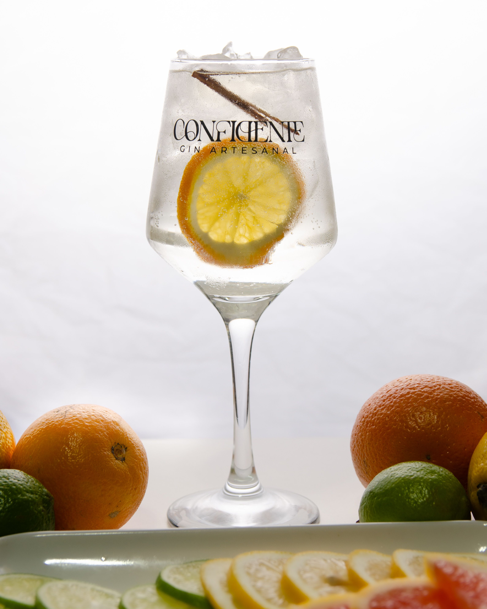

Página inicial | Ir para Passos e Tabela (Página 2)
O gin tónico é um dos cocktails mais populares e saborosos do mundo. Preparar um bom gin tónico exige atenção aos detalhes mas não é um bicho de sete cabeças!
O resultado final deve parecer refrescante e bem servido num copo
